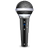

amixer
Dieser Artikel wurde für die folgenden Ubuntu-Versionen getestet:
Ubuntu 16.04 Xenial Xerus
Ubuntu 14.04 Trusty Tahr
Zum Verständnis dieses Artikels sind folgende Seiten hilfreich:
 amixer ist der text-basierte Mixer für ALSA. Wie der Alsamixer, der über eine ncurses-Oberfläche verfügt, ist der amixer ein Werkzeug für das Terminal, insbesondere für eigene Skripte.
amixer ist der text-basierte Mixer für ALSA. Wie der Alsamixer, der über eine ncurses-Oberfläche verfügt, ist der amixer ein Werkzeug für das Terminal, insbesondere für eigene Skripte.
Der amixer ist ein mächtiges Werkzeug und kann alle Einstellungen vornehmen, die vom Treiber unterstützt werden. Auf unterer Ebene sind diese Einstellungen schwer zu verstehen, daher bietet amixer „simple mixer controls“ – das sind Steuerungen (Regler, Schalter) mit für den Menschen verständlichen Bezeichnungen. In diesem Artikel werden nur die Kommandos für diese einfachen Steuerelemente behandelt. Weitere Informationen bietet die Manpage.
Der Artikel beschreibt im Abschnitt Bedienung die einzelnen Optionen und Kommandos allgemein. Die Beispiele am Ende des Artikels liefern konkrete Anwendungsfälle, die für das Verständnis hilfreich sein sollen.
Installation¶
amixer ist in der Standardinstallation bereits vorhanden und wird durch folgendes Paket[1] bereitgestellt:
alsa-utils
 mit apturl
mit apturl
Paketliste zum Kopieren:
sudo apt-get install alsa-utils
sudo aptitude install alsa-utils
Bedienung¶
amixer wird im Terminal[2] aufgerufen und kann in Skripten[3] verwendet werden:
amixer [-OPTION] [KOMMANDO]
Optionen¶
Kartenwahl¶
Die wichtigste Option dient zur Angabe, welche Karte gesteuert werden soll. Die dazu benötigten Nummern der Karten können wie folgt ermittelt werden:
cat /proc/asound/cards
Dies ist eine Beispiel-Ausgabe, mit einem Grafikadapter der über die HDMI-Ausgabe (0) Sound ausgibt, einem MPU-401-Gerät (1) und und einem Via-Soundchip (2):
0 [HDMI ]: HDA-Intel - HDA ATI HDMI
HDA ATI HDMI at 0xf8030000 irq 17
1 [UART ]: MPU-401 UART - MPU-401 UART
MPU-401 UART at 0x330, irq 10
2 [V8237 ]: VIA8237 - VIA 8237
VIA 8237 with ALC655 at 0xd000, irq 22
Mit dem Parameter -c und der Nummer kann nun eine bestimmte Karte angesteuert werden, zum Beispiel:
amixer -c 2 info
Kommando-Modus¶
Im Kommando-Modus bezieht amixer Befehle direkt von der Eingabe, allerdings werden nur die Kommandos zum Setzen von Werten unterstützt. Der Modus wird aufgerufen mit:
amixer -s
Mit Strg + C verlässt man den Kommando-Modus.
Weitere Optionen¶
| Parameter | Erklärung |
-h | Hilfe |
-q | Stiller Modus, d.h. nach dem Ändern einer Einstellung wird diese nicht ausgegeben. |
Kommandos¶
| Parameter | Erklärung |
help | Hilfe |
info | Zeigt Informationen zu einer Soundkarte. |
scontrols | Zeigt die Liste der einfachen Steuerungselemente. |
scontents | Zeigt die vollständige Liste der Steuerungselemente und ihrer Werte. |
sset SCONTROL PARAMETER ... | Setzt den Wert für ein Element. |
sget SCONTROL | Zeigt den Wert für ein Element. |
Beispiele¶
Je nach Steuerungselement sind verschiedene Angaben für die Werte möglich:
Prozentangaben:
amixer sset 'PCM' 70%Dezibel-Angaben:
amixer sset 'Master' 3dBFixe Hardware-Werte (ergeben sich aus den
limits):amixer sset 'Mic' 4Relative Angaben mit
+und-als Suffix zu den Prozent-, dB- oder Hardwarewerten:amixer sset 'PCM' 10%+Aufnahme an/aus (
cap/nocap):amixer sset 'Line' capWiedergabe an/aus (
unmute,mute):amixer sset 'Mic' muteAn/Aus (
on/off):amixer sset 'Master' offGerätenamen (ergeben sich aus den
items):amixer sset 'Mic Select' 'Mic1'

Mikrofon-Einstellungen¶
Verwendete Hardware¶
In diesem Beispiel wird folgende Soundkarte verwendet:
amixer -c 2 info
Card hw:2 'V8237'/'VIA 8237 with ALC655 at 0xd000, irq 22' Mixer name : 'Realtek ALC655 rev 0' Components : 'AC97a:414c4760' Controls : 48 Simple ctrls : 29
Übersicht der einfachen Steuerungselemente mit
amixer -c 2 scontrols: AusgabeÜbersicht der einfachen Steuerungselemente mit Werten mittels
amixer -c 2 scontents: Ausgabe
Vorhandene Einstellungen¶
Die Mikrofon-Einstellungen liefert der Befehl:
amixer -c 2 sget 'Mic'
Simple mixer control 'Mic',0 Capabilities: pvolume pvolume-joined pswitch pswitch-joined cswitch cswitch-exclusive penum Capture exclusive group: 0 Playback channels: Mono Capture channels: Front Left - Front Right Limits: Playback 0 - 31 Mono: Playback 0 [0%] [-34.50dB] [off] Front Left: Capture [off] Front Right: Capture [off]
Das Mikrofon wird weder zu Ausgabe noch zur Wiedergabe genutzt (off) und die Lautstärke ist ganz herunter geregelt.
Einstellungen verändern¶
Der folgende Befehl stellt die Lautstärke des Mikrofons der zweiten Soundkarte auf 80%, nimmt die Stumm-Schaltung raus und wählt diesen Kanal zur Aufnahme.:
amixer -c 2 sset Mic,0 80% unmute cap
Die Einstellung des Mikrofon sieht danach so aus:
Simple mixer control 'Mic',0 Capabilities: pvolume pvolume-joined pswitch pswitch-joined cswitch cswitch-exclusive penum Capture exclusive group: 0 Playback channels: Mono Capture channels: Front Left - Front Right Limits: Playback 0 - 31 Mono: Playback 25 [81%] [3.00dB] [on] Front Left: Capture [on] Front Right: Capture [on]
Um die Lautstärke nun um zehn Prozent zu senken:
amixer -c 2 sset Mic,0 10%-

 Programmübersicht
Programmübersicht- Erstellt mit Inyoka
-
 2004 – 2017 ubuntuusers.de • Einige Rechte vorbehalten
2004 – 2017 ubuntuusers.de • Einige Rechte vorbehalten
Lizenz • Kontakt • Datenschutz • Impressum • Serverstatus -
Serverhousing gespendet von